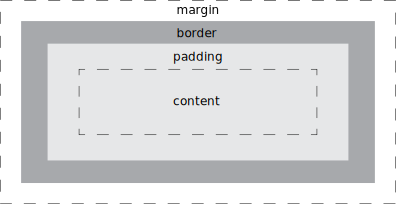
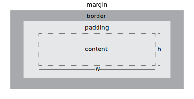
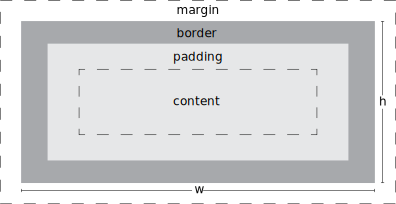

The Box Model
Box Model
Every HTML element on a web page is a rectangular box and understanding how it is constructed is an important step towards exercising control over our websites.
The box model looks something like this:
We can set values for each of these parameters to change the size and behavior of each box by adjusting the width, height, padding, border, and margin of an element.
By setting a width and height value we can control the size of the content box. By default, however, this does not account for the values for padding, border, and margin.
So, in order to calculate the total width of an element we would need to add the values for:
And for the total height of an element:
So, when we set the width and height values of an element, we are only setting the values for the content box:
Some other things to note:
- Block level elements have a default width of 100% and will take up the full width of the viewport unless specified otherwise.
- Width and height values will have no effect on inline elements.
- Inline-block elements will behave like inline elements and will stack alongside other elements but, unlike inline elements, can be given width, height, padding, and margin values.
Box-Sizing
We are able to change how the total width of an element is calculated with the box-sizing property. By default, the box-sizing property is set to content-box. If we change the box-sizing property to border-box we can include the padding and border sizes in the total width and height of an element.
This means that when we set the width and height properties of an element, they will always render at that exact width and height regardless of the padding and border sizes.
This is generally the preferred method of box sizing by most developers because it simplifies the calculation of the actual size of an element. When using border-box, the only thing left to be accounted for is the margin.
To make things easier we can add these lines to the top of our stylesheet to make every element render using border-box:
Typically, I add this to every stylesheet I’m working on!